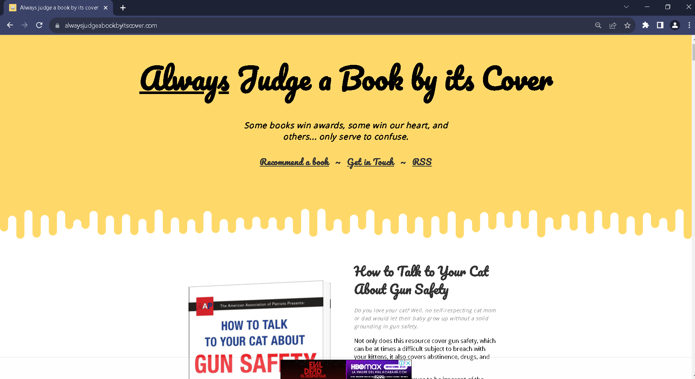

Poor Safety Example - Always Judge a Book by its Cover

URL: https://alwaysjudgeabookbyitscover.com
I Like...
- Visually appealing design
- Creative use of graphics and illustrations
- Interesting book recommendations
I Wish...
- Better navigation options for easy browsing
- Clear instructions for book purchases
- Better contrast between text and background colors
What If...
- Implement clear and prominent safety warnings regarding external links
- Increase text size for the book descriptions
- Incorporating keyboard navigation for users who cannot use a mouse